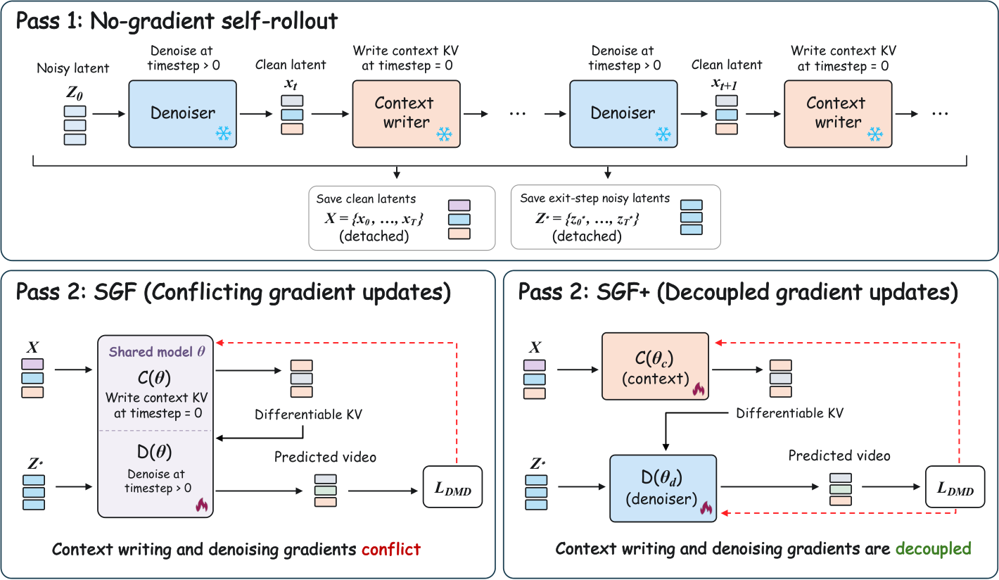

Imagine one person who must both paint the next panel of a comic and keep the continuity notes for later panels. Feedback to "paint sharper" and "write cleaner notes" keeps pushing their habits in opposite directions. SGF+ hires a separate note-keeper; the painter still reads the notes, so the two stay coordinated.
만화의 다음 칸을 그리는 일과 뒤 칸을 위한 연결 메모를 남기는 일을 한 사람이 다 해야 한다고 하자. "더 선명하게 그려라"와 "메모를 더 깔끔하게 써라"라는 피드백이 그 사람의 습관을 계속 반대쪽으로 민다. SGF+는 메모 담당을 따로 둔다. 그린 사람은 여전히 그 메모를 읽으므로 둘은 계속 맞물려 움직인다.
How it works: same two passes, two sets of weights작동 방식은 같은 두 단계, 가중치 두 벌
Only the bottom-right box changes: C(θc) and D(θd) replace one shared θ. The rollout, the differentiable KV replay, and the DMD loss are SGF's.
바뀌는 것은 오른쪽 아래 상자뿐이다. 공유 θ 하나 대신 C(θc)와 D(θd)를 쓴다. 롤아웃, 미분 가능한 KV 재구성, DMD 손실은 모두 SGF 그대로다.

- Copy the model twice.모델을 두 벌로 복사한다.Writer and denoiser both start from the Causal Forcing teacher-forcing checkpoint of Wan2.1-1.3B.작성기와 디노이저 모두 Wan2.1-1.3B 기반 Causal Forcing 교사 강제 체크포인트에서 출발한다.
- Roll out 5 s, then replay.5초를 롤아웃한 뒤 다시 계산한다.The writer encodes clean history into KV; the denoiser reads it to denoise targets.작성기는 깨끗한 이력을 KV로 쓰고, 디노이저는 그것을 읽어 목표 프레임을 디노이즈한다.
- One loss, two update paths.손실 하나, 업데이트 경로 둘.DMD against a frozen Wan2.1-14B teacher reaches the writer only through future predictions.고정된 Wan2.1-14B 교사와의 DMD 손실은 미래 예측을 거쳐서만 작성기에 닿는다.
Key finding: the two roles fight핵심 발견은 두 역할이 서로 싸운다는 것
Both module families sit past the 90° line, so summed updates partly cancel. The conflict already shows at teacher-forcing initialization, before any SGF training.
두 모듈 계열 모두 90° 선을 넘어서 있어, 더해진 업데이트가 일부 상쇄된다. 이 충돌은 SGF 학습 전, 교사 강제 초기화 시점에 이미 보인다.
Results: steadier long videos긴 영상이 더 안정적이다
SGF+ wins every consistency and quality metric at 240 s, but not Dynamic Degree. The authors argue the baselines' extra "motion" is scene jumps and deformation.
SGF+는 240초에서 일관성과 화질 지표를 모두 이기지만 Dynamic Degree는 진다. 저자들은 기준선의 높은 "움직임"이 장면 튀기와 변형 때문이라고 본다.
| Metric | Self Forcing | SGF | SGF+ |
|---|---|---|---|
| Subject consistency | 94.94 | 97.72 | 98.21 |
| Background consistency | 95.21 | 96.90 | 97.31 |
| Temporal flickering | 93.54 | 97.03 | 97.57 |
| Aesthetic quality | 55.12 | 62.54 | 64.74 |
| Imaging quality | 68.38 | 71.11 | 71.39 |
| Dynamic degree | 93.90 | 56.97 | 56.92 |
Twice the weights, almost the same speed. Each token only uses its own role's parameters, so compute per step does not double.
가중치는 두 배인데 속도는 거의 같다. 토큰마다 자기 역할의 가중치만 쓰므로 단계당 계산량은 두 배가 되지 않는다.
When one network plays two roles under one loss, such as writing a cache and reading it, measure the per-role gradient angle before tuning anything else. Past 90°, separate weights may be the cheapest fix.한 네트워크가 손실 하나 아래에서 캐시를 쓰고 읽는 식으로 두 역할을 맡는다면, 다른 걸 조정하기 전에 역할별 기울기 각도부터 재 보자. 90°를 넘으면 가중치를 나누는 것이 가장 싼 해법일 수 있다.
Baselines are only Self Forcing and SGF on one 1.3B backbone, with one seed, and no human study. The large Dynamic Degree drop at 240 s is explained by examples, not measured, and the extra 1.4B parameters are not compared against simply widening a shared model.기준선은 1.3B 백본 하나 위의 Self Forcing과 SGF뿐이고, 시드는 하나이며 사람 평가도 없다. 240초에서 Dynamic Degree가 크게 떨어지는 이유는 예시로만 설명했지 측정하지 않았다. 늘어난 1.4B 가중치를 그냥 공유 모델을 키운 경우와 비교하지도 않았다.